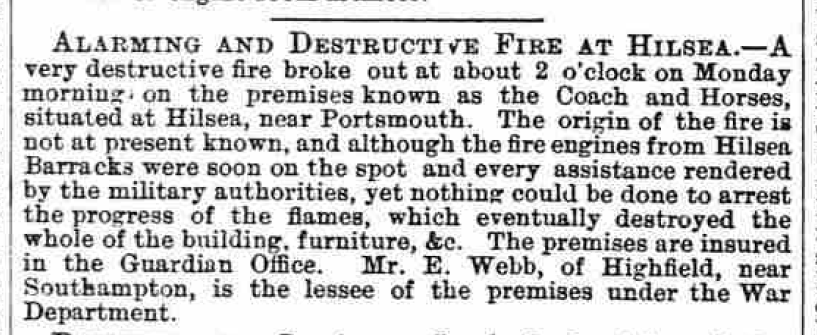
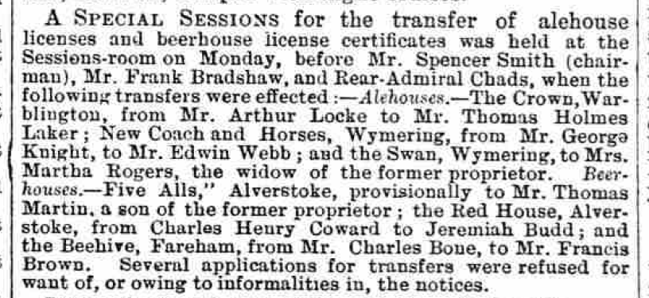

Marriage
Friday 18 May, 1832Marriage of Samuel Neat and Lucy Seal (source: Ancestry tree of user jetfab). It would be interesting to find out if he is listed as a publican on the marriage certificate.
Hampshire Chronicle
Monday 01 Jul, 1839An inquest was held at the Coach and Horses at Hilsea, near Portsmouth, by Mr Longcroft, on the body of Jonas Over, of Easton, near this city, found dead on Monday in a field of standing oats at Hilsea, about 100 yards from a footpath leading from Cosham to Landport. The body, from its advanced state of decomposition, exhibited a sad and distressing spectacle, having lain in the situation in which it was found ten or eleven days. The poor fellow had been engaged for some weeks on the premises of Mr. Baker at Wymering but had completed and left his work there on the 1st of June and had since been employed at the erection of some new buildings at Cosham, and was last seen there on the 13th inst. No direct evidence appearing as to the cause of his death, a verdict of Found Dead was returned, and the body interred the same evening in Wymering church-yard. Whatever may have occasioned the death of the poor fellow, there is reason to hope, from the easy position in which the body was found, that it was occasioned by no act of violence.
1841 Census
Sunday 06 June, 1841| Name | Age | Occupation |
|---|---|---|
| Samuel Neat | 45 | Publican |
| Lucy Neat | 35 | — |
| Salley Neat | 15 | — |
| Samuel Neat | 3 | — |
Hampshire Telegraph
Saturday 25 May, 1850
TO be LET for the Summer Season. — Respectable FURNISHED APARTMENTS, a short distance from Portsea, and within ten minutes walk of the Cosham Station of the London and South-Western Railway.
Address X.Y.Z. Coach and Horses, Hilsea.
Comment
Given the low number of occupants on the 1841 and 1851 censuses when compared with the 1861, I think the layout of the building must have been reworked between 1851 and 1861, moving from furnished apartments to lodging rooms.
Portsmouth Times and Naval Gazette

BEDHAMPTON.
On Thursday evening shortly before 5 o'clock a shocking accident occurred to a waggoner in the employ of Mr. Henry Stoueham, miller of Bedhampton. It appears that the waggoner was sitting in the front part of the waggon driving the Team, and one of the shaft horses when near Hilsea, commenced kicking in a fearful manner and the unfortunate man received a kick which broke one of his legs, and severely injured the other. He was conveyed to the Coach and Horses, near which the accident occurred, where he received medical assistance. The horse became entangled in the harness, but was extricated with promptitude, and but little injured.
1851 Census
Sunday 30 March, 1851| Name | Relation | Condition | Age | Occupation | Where born |
|---|---|---|---|---|---|
| Samuel Neat | Head | Married | 56 | Licensed Victualler | Bramshaw, Hants |
| Lucy Neat | Wife | Married | 40 | — | Soberton, Hants |
| Elizabeth Neat | Daughter | — | 11 | Scholar | Wymering, Hants |
| Rosina Neat | Daughter | — | 9 | Scholar | Wymering, Hants |
| George E Neat | Son | — | 7/12? | Scholar | Wymering, Hants |
| Arthur Smith | Servant | Single | 32 | Servant | Hayling Island, Hants |
Portsmouth Times and Naval Gazette
Saturday 07 August, 1852Hampshire Telegraph
Saturday 13 October, 1855
NEAT—On the 18th ult., at Hilsea, in his 53rd year, Mr. Samuel Neat, Landlord of the Coach and Horses Inn, much respected by all who knew him.
Hampshire Telegraph
Saturday 01 November, 1856Hampshire Telegraph

Hampshire Telegraph
Saturday 10 January, 1857
Comment
Lucy Neat continues running the business until at least October 1863, but presumably she came close to abandoning/losing it after her husband died. By 1881 she is living at Wymering Road Alms House, and she dies in 1890.
1861 Census
| Name | Relation | Condition | Age | Occupation | Where born |
|---|---|---|---|---|---|
| Lucy Neat | Head | Widow | 51 | Licensed Victualler | Earnley, Sussex |
| Hannah Neat | Daughter | Single | 19 | Laundress | Hilsea, Hants |
| George E Neat | Son | Single | 10 | Scholar | Hilsea, Hants |
| Robert Wilson | Son-in-law | Married | 27 | ??? | Ireland |
| Elizabeth V Wilson | Daughter | Married | 21 | Dressmaker | Hilsea, Hants |
| Samuel H Wilson | Grandson | Single | 8/12 | — | Hilsea, Hants |
| Arthur Smith | Servant | Single | 41 | Ostler | Hayling Island, Hants |
| Thomas Cox | Lodger | Single | 36 | Labourer on Portsbridge Fortification | Chichester, Sussex |
| James Ferber | Lodger | Single | 22 | Waterford, Somerset | |
| Alfred Leister | Lodger | Single | 20 | Andover, Hants | |
| Thomas L Gale | Lodger | Single | 57 | Hampton, Hants | |
| John Clark | Lodger | Single | 34 | Alton, Hants | |
| Thomas Heasman | Lodger | Single | 21 | East Grinstead, Sussex | |
| George Stevens | Lodger | Single | 32 | — | |
| Paul Jones | Lodger | Single | 42 | — | |
| John Smith | Lodger | Single | 34 | Crobom Common | |
| Francis Carter | Lodger | Single | 21 | Andover, Hants | |
| Henry Sheppard | Lodger | Single | 67 | Chichester, Sussex | |
| Peter Brown | Lodger | Single | 67 | ??? | |
| William Parfit | Lodger | Single | 21 | Peterfield, Hants |
Portsmouth Times and Naval Gazette
Saturday 03 May, 1862Hampshire Advertiser

Hampshire Telegraph
Saturday 05 July, 1862Hampshire Advertiser
Saturday 23 August, 1862Assaulting a Landlady.—George Goodwin was charged by Mrs. Lucy Neat, landlady of the Coach and Horses, at Hilsea, with having assaulted her. The prisoner pleaded guilty, and was fined 15s and 7s 6d costs; in default of payment, fourteen days' hard labour.
Hampshire Chronicle
Saturday 14 February, 1863Portsmouth Times and Naval Gazette
Saturday 24 October, 1863Hampshire Advertiser

Portsmouth Times and Naval Gazette

Portsmouth Times and Naval Gazette
Saturday 13 February, 1864Thomas Martin was charged with having, on the 5th inst., stolen two pickaxes, the property of Edward Custance, from the Government Works at Hilsea. During the last six weeks the proscutor had lost upwards of 80 "picks" from the works, and in consequence of information received a man was sent on the day named to the Coach and Horses, at Hilsea, where the prisoner was drinking, and purchased of him the two picks produced, which were identified by the prosecutor as his property. The prisoner was committed for trial at the ensuing Assizes.
Hampshire Chronicle
Saturday 05 March, 1864Hampshire Telegraph

Portsmouth Times and Naval Gazette
Saturday 21 September, 1867Hampshire Telegraph

Hampshire Telegraph

Portsmouth Times and Naval Gazette
Saturday 23 October, 1869Hampshire Telegraph

Hampshire Telegraph
Wednesday 07 September, 1870Portsmouth Times and Naval Gazette

Hampshire Advertiser

Wednesday 05 October, 1870Portsmouth Times and Naval Gazette
Saturday 08 October, 1870Hampshire Chronicle

Hampshire Advertiser
Wednesday 14 December, 1870Hampshire Advertiser
Saturday 24 December, 1870Portsmouth Times and Naval Gazette

Hampshire Advertiser

Hampshire Advertiser

Hampshire Telegraph

Hampshire Telegraph

Portsmouth Times and Naval Gazette
Saturday 02 December, 1871Hampshire Advertiser

Wednesday 10 January, 1872Hampshire Telegraph
Wednesday 06 March, 1872Hampshire Advertiser
Wednesday 03 April, 1872Hampshire Telegraph
Wednesday 08 May, 1872
Hampshire Advertiser
Wednesday 29 May, 1872Hampshire Advertiser
Wednesday 19 February, 1873Hampshire Telegraph
Saturday 31 January, 1874Hampshire Telegraph
Wednesday 13 May, 1874
Hampshire Telegraph
Saturday 15 April, 1876Hampshire Advertiser
Wednesday 05 June, 1878Hampshire Telegraph

Hampshire Advertiser

Portsmouth Evening News

Portsmouth Evening News

The Evening News
Tuesday 16 October, 1883FAREHAM.
PETTY SESSIONS.
Yesterday. — Before E. J. Sartoris, Esq. (in the chair), F. Bradshaw, Esq., and Sir Frederick Sykes, Bart.
REFUSING TO QUIT.— Charles H. Newton and Eleanor Newton, man and wife, were summoned for being drunk and refusing to quit the Coach and Horses, Hilsea, when requested to do so by the landlord, Mr. Jones, on the 2nd inst.— They were fined 15s. each, including costs.